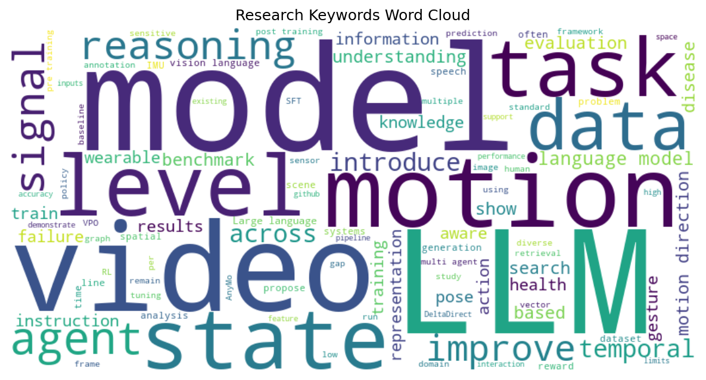

Jongseo Lee, Hyuntak Lee, Sunghun Kim et al.
2026-05-21
Video Large Language Models (Video-LLMs) have made rapid progress on temporal video understanding, yet many fail at a basic perceptual primitive: signed image-plane motion direction. On simple videos of a single object moving left, right, up, or down, most Video-LLMs perform near chance, with above-...
Lee Hsin-Ying, Hanwen Jiang, Yiqun Mei et al.
2026-05-21
Current motion-controlled image-to-video generation models rigidly follow user-provided trajectories that are often sparse, imprecise, and causally incomplete. Such reliance often yields unnatural or implausible outcomes, especially by missing secondary causal consequences. To address this, we intro...
Baiyu Chen, Zechen Li, Wilson Wongso et al.
2026-05-21
As wearable and mobile devices become increasingly embedded in daily life, they offer a practical way to continuously sense human motion in the wild. But inertial signals are highly dependent on the sensing setup, including body location, mounting position, sensor orientation, device hardware, and s...
Pilchen Hippolyte, Fabre Romain, Signe Talla Franck et al.
2026-05-21
Large language models (LLMs) are typically trained on shuffled corpora, yielding models whose knowledge is frozen at train time and whose temporal grounding remains poorly understood. In this work, we study the impact of pre-training dynamics on the acquisition of time-sensitive factual knowledge, f...
Sadia Asif, Mohammad Mohammadi Amiri, Momin Abbas et al.
2026-05-21
Large language model (LLM)-based multi-agent systems increasingly rely on intermediate communication to coordinate complex tasks. While most existing systems communicate through natural language, recent work shows that latent communication, particularly through transformer key-value (KV) caches, can...
Md Shamim Ahmed, Farzaneh Firoozbakht, Lukas Galke Poech et al.
2026-05-21
Biomedical knowledge graphs (KGs) treat disease associations as static facts, but temporal information is crucial for clinical reasoning, e.g., a symptom diagnostic of one disease at age 3 may imply a different disease at age 13. Existing KGs such as PrimeKG, Hetionet, and iKraph do not encode when ...
Jihan Yang, Zifan Zhao, Xichen Pan et al.
2026-05-21
Camera pose matters. The position and orientation of each viewpoint define a shared spatial coordinate frame that relates observations across video frames. Yet this signal is largely absent from multimodal LLMs (MLLMs) for video understanding, which process frames as isolated 2D snapshots, instead o...
Wenxuan Guo, Xiuwei Xu, Yichen Liu et al.
2026-05-21
Vision-and-Language Navigation (VLN) requires an agent to ground language instructions to its own movement within a visual environment. While state-of-the-art methods leverage the reasoning capabilities of Vision-Language Models (VLMs) for end-to-end action prediction, they often lack an explicit an...
Dong Nie
2026-05-21
Large language model post-training methods such as supervised fine-tuning (SFT), reinforcement learning (RL), and distillation are often analyzed through their loss functions: maximum likelihood, policy gradients, forward KL, reverse KL, or related objective-level variants. We study a complementary ...
Ryan Bahlous-Boldi, Isha Puri, Idan Shenfeld et al.
2026-05-21
Language models must now generalize out of the box to novel environments and work inside inference-scaling search procedures, such as AlphaEvolve, that select rollouts with a variety of task-specific reward functions. Unfortunately, the standard paradigm of LLM post-training optimizes a pre-specifie...
Huanchi Wang, Zihang Huang, Yifang Tian et al.
2026-05-21
Production systems generate millions of log lines daily, yet most anomaly detectors operate at the session or window-level, flagging groups of lines rather than identifying the specific message responsible. This coarse granularity forces operators to inspect many routine lines per alert. Message-lev...
Juergen Dietrich
2026-05-21
We investigate whether acoustic emotion recognition models can serve as proxies for the Pathos dimension in political speech analysis, as operationalised by the TRUST multi-agent large language model (LLM) pipeline. Using a Bundestag plenary speech by Felix Banaszak (51 segments, 245 s) as a case st...
Wenxuan Guo, Ziyuan Li, Meng Zhang et al.
2026-05-21
Vision-Language-Action (VLA) models have shown strong potential for general-purpose robot manipulation by unifying perception and action. However, existing VLA systems primarily rely on textual instructions and struggle to resolve spatial ambiguity in complex scenes with multiple similar objects. To...
Girish Narayanswamy, Maxwell A. Xu, A. Ali Heydari et al.
2026-05-21
While ubiquitous wearable sensors capture a wealth of behavioral and physiological information, effectively transforming these signals into personalized health insights is challenging. Specifically, converting low-level sensor data into representations capable of characterizing higher-level states i...
George Tsoukalas, Anton Kovsharov, Sergey Shirobokov et al.
2026-05-21
Large language models (LLMs) increasingly excel at mathematical reasoning, but their unreliability limits their utility in mathematics research. A mitigation is using LLMs to generate formal proofs in languages like Lean. We perform the first large-scale evaluation of this method's ability to solve ...
